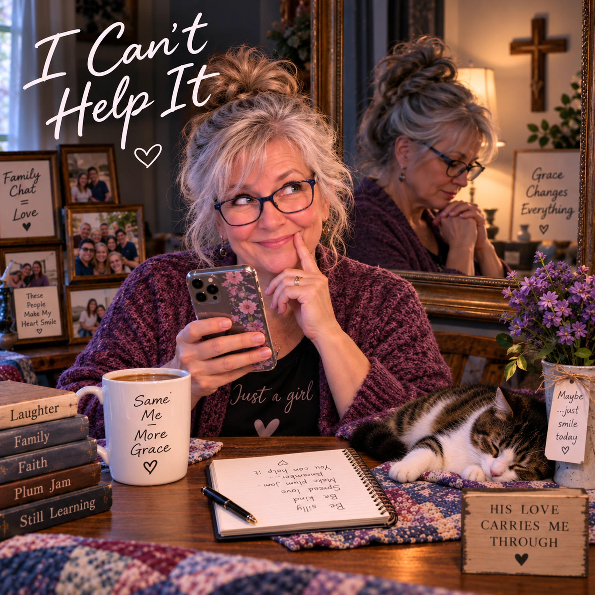

I Can't Help It

Want to download this song? Return to the Songs page, add this song to your playlist, then open My Playlist. Select the song and choose Download Song to review the Free Use agreement.
Lyrics
Verse 1
In the family chat, I’m cracking one-liners,
While they laugh and digitally groan,
I’m pirouetting in my dress, I'm the designer.
Apologies flow, but the humor won't quit,
Every other line I type, “I just can’t help it.”
Chorus
I can't help it, oh, but you know I do,
With arms wide open, my love shines through.
In laughter and sorrow, whether morning or night,
My family finds my love... even though I’m not contrite.
Verse 2
I promise to tone it down,
But then I dive back in,
A joke that goes off, but all with good spin.
You gotta love me, it’s just how I am,
With a wink and a smile...”I make plum jam.”
Chorus
You can't help it, oh, but I know you do,
With arms wide open, your love shines through.
In laughter and sorrow, whether morning or night,
I find my family’s love even though I’m not contrite.
Bridge
But when I look up, in the silence of night,
A whispering thought, hits me with fright.
Would I dare say, in Your sacred embrace,
“You gotta love me,” while I seek Your grace?
You can help it, I’m reminded each day,
Your Son on the cross, His life He did pay.
Chorus
I can't help it, oh, but I know You do,
With arms wide open, Your love shines through.
In laughter and sorrow, whether morning or night,
I find my redemption when I kneel, contrite.
Outro
So here in this chat, with family and fun,
I carry His love, like a light in the sun.
And when I trip up, with a laugh or a sigh,
You whisper to me gently, “I can’t help but try.”
Devotional
When Grace Meets the Joke
Laughter can be a gift in a family. Proverbs says, “A merry heart doeth good like a medicine” (Proverbs 17:22). It can ease a hard day, make affection audible, and remind people that they belong together. Yet Scripture also asks us to consider what our words do to those who hear them, calling us to speak “that which is good to the use of edifying” (Ephesians 4:29). A joke may be offered with love and still need a little care.
The opening of the song, I Can’t Help It, lives in that familiar space. The family groans, laughs, and keeps loving one another. Its playful refrain sounds like a request to be accepted, quirks and all. Then the bridge carries those same words into prayer, where they cannot mean quite the same thing.
“You Gotta Love Me”
Family members may say this to each other with a wink. Before God, it raises a serious question: Does He owe me His love because I am who I am? Scripture gives us no claim on grace as something we have earned. Romans says, “if by grace, then is it no more of works” (Romans 11:6). First John tells us, “Herein is love, not that we loved God, but that he loved us” (1 John 4:10), while Romans says, “while we were yet sinners, Christ died for us” (Romans 5:8).
That truth is more reassuring than a claim that God has to love us. His mercy does not depend on the strength of our argument for ourselves. We can come to Him without making one.
The Cross Is More Than an Attempt
The bridge remembers the Son and the cost of the cross. Scripture speaks of Christ’s saving work as accomplished, not as a hopeful effort whose outcome is uncertain. Christ “once suffered for sins, the just for the unjust, that he might bring us to God” (1 Peter 3:18), and Hebrews speaks of Him having “obtained eternal redemption for us” (Hebrews 9:12). We must let that testimony govern how we hear the song.
The affectionate voice in the outro—“I can’t help but try”—can express how patiently God’s call reaches the singer again. It is the song’s human way of hearing that patience, not a statement that God is struggling to make redemption possible. His grace can keep drawing us toward honest repentance because Christ’s work is sure.
Contrition Is an Answer to Grace
The final chorus changes one word with great weight: the singer kneels contrite. Psalm 51 says, “a broken and a contrite heart, O God, thou wilt not despise” (Psalm 51:17). Second Corinthians describes “godly sorrow” that “worketh repentance to salvation” (2 Corinthians 7:10). Contrition is not payment. It is the honest recognition that grace was needed.
Salvation remains God’s gift: “For by grace are ye saved through faith” and “not of works” (Ephesians 2:8–9). First John calls us to acknowledge rather than conceal sin, promising that “if we confess our sins, he is faithful and just to forgive us our sins” (1 John 1:9). That is how the turn in the song, I Can’t Help It, comes into focus. At home, “I’m not contrite” belongs to its comic rhythm. Before God, contrition becomes a way of living truthfully by grace and acknowledging His forgiveness. The humor need not vanish for that change to be real.
Love Comes Back to the Chat
Grace does not end at the moment of prayer. Titus says that “the grace of God that bringeth salvation” is also “teaching us” how to live (Titus 2:11–12). It can shape the next family message too: whether the joke builds someone up, whether an apology is needed, and whether affection is clear beneath the teasing.
We may still be funny. We may still be imperfect. We can also remain willing to learn. And we can trust that “he which hath begun a good work in you will perform it” (Philippians 1:6). The family chat is an ordinary place. That makes it a good place to practice a grace that has reached us in Christ and continues to change us.
For Reflection
When I say, “That’s just how I am,” am I sharing a harmless quirk, or resisting a change love asks of me? Can I receive forgiveness without pretending I did nothing wrong? How might grace shape the next words I offer my family?
Prayer
Father, thank You for loving me through Jesus Christ when I could make no claim to deserve it. Keep laughter and affection alive in my family, and teach me to notice when my words need greater care.
Give me a contrite heart that tells You the truth without trying to earn what You freely give. Help me acknowledge Your forgiveness by living in its light. Let Your grace make me quicker to listen, willing to apologize, and glad to love others well. Amen.